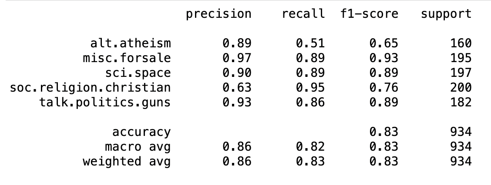

Text Classification Using Python and Scikit-learn
Text classification is the task of automatically assigning labels to pieces of text, such as articles, blog posts, or reviews. Many businesses use text classification algorithms to save time and money by reducing the amount of manual labor needed to organize and analyze their text data.
These algorithms are extremely powerful tools when used correctly. Text classification models keep your email free of spam, assist authors in detecting plagiarism, and help your grammar checker understand the various parts of speech.
If you want to build a text classifier, you have many options to choose from. You can use traditional methods such as bag of words, advanced methods like Word2Vec, or cutting-edge approaches like BERT or GPT-3.
But if your goal is to get something up and running quickly and at no cost, you should build your text classification model with Python and Scikit-learn. I’ll show you how in this tutorial.
So let’s get started!
Prerequisites
Before we start, you need to install some libraries. The best way to do that is to create a new virtual environment and install the packages there.
If you’re using venv, run these commands:
python3 -m venv .textcl
source .textcl/bin/activate
python3 -m pip install pandas==1.4.3 notebook==6.3.0 numpy==1.23.2 scikit-learn==1.1.2If you’re using conda, this is how you do it:
conda create --name textcl
conda activate textcl
conda install pandas==1.4.3 notebook==6.3.0 numpy==1.23.2 scikit-learn==1.1.2That’s it! These commands will create a virtual environment, activate it, and install the required packages.
Finally, start a Jupyter Notebook session by executing jupyter notebook on the same terminal where you ran the previous commands and create a new notebook.
Import the Required Libraries
The first step, as always, is to import the necessary libraries. Create a new cell in your notebook, paste the following code in it, and run the cell:
import joblib
import re
import string
import numpy as np
import pandas as pd
from sklearn.datasets import fetch_20newsgroups
from sklearn.feature_extraction.text import CountVectorizer
from sklearn.metrics import accuracy_score, cohen_kappa_score, f1_score, classification_report
from sklearn.model_selection import StratifiedKFold, train_test_split
from sklearn.naive_bayes import MultinomialNBThis code will import the required libraries. Here’s why you need them:
- You import
joblibto save your model artifacts. - You import
reandstringto process the text. - You import
numpyandpandasto read and transform the data. - You import multiple components of
scikit-learnto extract features from the text, calculate the evaluation metrics, split the data into a training and a test set, and use the Multinomial Naive Bayes algorithm.
Next, you’ll read and process the data.
Read the Data
Start by reading the data. You’ll use a dataset included in scikit-learn called 20 newsgroups. This dataset consists of roughly 20,000 newsgroup documents, split into 20 categories. For the sake of simplicity, you’ll only use five of those categories in this example.
Create a new cell and paste this code to read the data:
categories = [
"alt.atheism",
"misc.forsale",
"sci.space",
"soc.religion.christian",
"talk.politics.guns",
]
news_group_data = fetch_20newsgroups(
subset="all", remove=("headers", "footers", "quotes"), categories=categories
)
df = pd.DataFrame(
dict(
text=news_group_data["data"],
target=news_group_data["target"]
)
)
df["target"] = df.target.map(lambda x: categories[x])This code reads the 20 newsgroups dataset. Here’s how it works:
- Lines 1 to 7: Define a list of categories, which are the different newsgroup categories used in the analysis:
alt.atheism,misc.forsale,sci.space,soc.religion.christian, andtalk.politics.guns. - Lines 9 to 11: Use
fetch_20newsgroupsto get the data from the 20 newsgroups dataset. This function removes the headers, footers, and quotes from the data and only gets data from the categories specified in thecategorieslist. - Lines 13 and 19: Create a data frame from the data fetched. The data frame has two columns, one for the text of the newsgroup post and one for the category (target) of the newsgroup. You change the target column to display the actual category name instead of a number.
That’s it. Now, you’ll do a bit of cleaning of the data.
Prepare the Data
Before you build your text classification model, you need to prepare the data. You’ll do it in three steps: clean the text column, create the training and testing splits, and generating bag of words features from the documents.
Clean the Text Column
Use this code to clean the text. It’ll remove the punctuation marks and multiple adjacent spaces:
def process_text(text):
text = str(text).lower()
text = re.sub(
f"[{re.escape(string.punctuation)}]", " ", text
)
text = " ".join(text.split())
return text
df["clean_text"] = df.text.map(process_text)This code lowercases the text and removes any punctuation marks or duplicated spaces, and stores the results in a new column called clean_text. For that, you use process_text, which takes a string as input, lowercases it, replaces all punctuation marks with spaces, and removes the duplicated spaces.
Split the Data Into Train and Test Sets
Next, you’ll split the dataset into a training and a testing set:
train_test_split is used to split a dataset into training and testing sets. You provide the data frame you wish to split to the function and specify the following parameters:
test_size=0.20: this defines the size of the test set to 20% of the total.stratify=df.target: ensures that the training and testing sets are split in a stratified manner usingtarget. This is important because it prevents bias.
Next, you’ll use these datasets to train and evaluate your model.
Create Bag of Words Features
Machine Learning models cannot handle text features directly. To train a model, you first need to turn your text into numerical features. One popular approach to do that is called bag of words, and that’s what you’ll use in this example.
In the bag of words approach, each document is represented as a row in a matrix, with each word or token appearing in the document represented by a column.
For example, consider these two sentences:
- I like reading books
- I do not like cooking
The simplest bag of words representation for these two sentences will look like this:
| id_doc | I | like | reading | books | do | not | cooking |
|---|---|---|---|---|---|---|---|
| 1 | 1 | 1 | 1 | 1 | 0 | 0 | 0 |
| 2 | 1 | 1 | 0 | 0 | 1 | 1 | 1 |
Once you have this numerical representation, you can pass this dataset to your machine learning model. This is what you’ll do with the documents in the 20 newsgroup dataset. Keep in mind that because the dataset has so many documents, you’ll end up with a matrix with many more columns than the example above.
To create a bag of words representation in scikit-learn , you must use CountVectorizer. You can use this code:
vec = CountVectorizer(
ngram_range=(1, 3),
stop_words="english",
)
X_train = vec.fit_transform(df_train.clean_text)
X_test = vec.transform(df_test.clean_text)
y_train = df_train.target
y_test = df_test.targetCountVectorizer turns text into numerical features. Here’s what’s happening in the code above:
- Lines 1 to 4: You use
CountVectorizerto build a bag of words representation ofclean_text. You specify two parameters:ngram_rangeandstop_words.ngram_rangeis the range of n-grams that the function will use. An n-gram is a sequence of n words.(1, 3)means that the function will use sequences of 1, 2, and 3 words to generate the counts.stop_wordsis a list of words that the function will ignore. In this case, the list “english” means that the function will ignore the most common words in English. - Lines 6 and 7: You generate the matrices of token counts for your training and testing set and save them into
X_trainandX_test. - Lines 9 and 10: You save the response variable from the training and testing set into
y_trainandy_test.
Next, you’ll train your text classification model.
Train and Evaluate the Model
Finally, you can train the model by running this code:
nb = MultinomialNB()
nb.fit(X_train, y_train)
preds = nb.predict(X_test)
print(classification_report(y_test, preds))In lines 1 and 2, you train a Multinomial Naive Bayes model. This simple probabilistic model is commonly used in cases with discrete features such as word counts.
Then, in lines 4 and 5, you evaluate the model’s results by computing the precision, recall, and f1 scores.
After you run the code, you’ll get an output that will look something like this:
You’ve trained the model and obtained the relevant evaluation metrics. You achieved an 0.83 f1 score, which is not bad!
Next, you’ll learn how to save and load your model so that you can use it for inference.
Saving and Loading the Model
If you’d like to save the model for later, then you can use joblib. You’ll need to save all the artifacts required to run the model, which in this case would be the vectorizer vec and the model nb.
You can use the following code to save your model artifacts:
If you want to reuse your model later, simply read it and use it to classify new data samples as follows:
nb_saved = joblib.load("nb.joblib")
vec_saved = joblib.load("vec.joblib")
sample_text = ["Space, Stars, Planets and Astronomy!"]
# Process the text in the same way you did when you trained it!
clean_sample_text = process_text(sample_text)
sample_vec = vec_saved.transform(sample_text)
nb_saved.predict(sample_vec)The code above will read the previously saved artifacts into nb_saved and vec_saved. Then you can apply them to new samples of text you’d like to classify.
That’s all! You’ve learned how to use Python and Scikit-learn to train a text classification model. Let me offer some suggestions for what you could do next.
Next Steps
If you want to take your modeling skills to the next level, here are some ideas to explore:
- Using Cross-validation to ensure that your results generalize well.
- Get the best out of your model by tuning your model’s hyperparameters.
- Using
scikit-learn’s pipelines to generate fewer artifacts and simplify deployment.
Also, given the latest advances in Natural Language Processing (NLP), transformer-based approaches are becoming the go-to options for many problems that use text features. A good starting point is huggingface’s NLP course.
Conclusion
In Machine Learning, text classification is the task of labeling pieces of text through automated methods. This tutorial showed you how to build your first text classification model using Python and Scikit-learn.
You’ve learned:
- How to clean text data and create features for your model.
- How to train a text classification model and generate evaluation metrics.
- How to save and load your model for future use.
If you have any questions or feedback, let me know in the comments!
All the code for this tutorial is available on GitHub.
Citation
@online{castillo2022,
author = {Castillo, Dylan},
title = {Text {Classification} {Using} {Python} and {Scikit-learn}},
date = {2022-08-23},
url = {https://dylanjcastillo.github.io/blog/posts/text-classification-using-python-and-scikit-learn.html},
langid = {en}
}